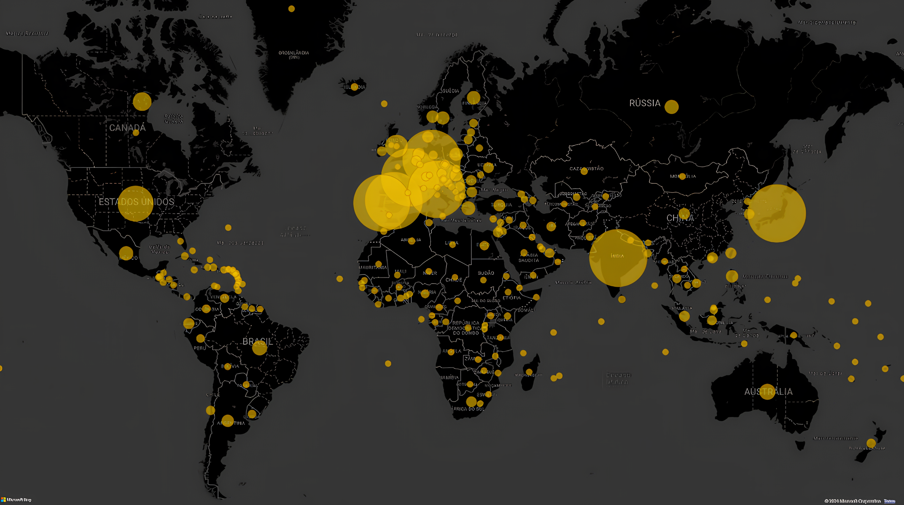
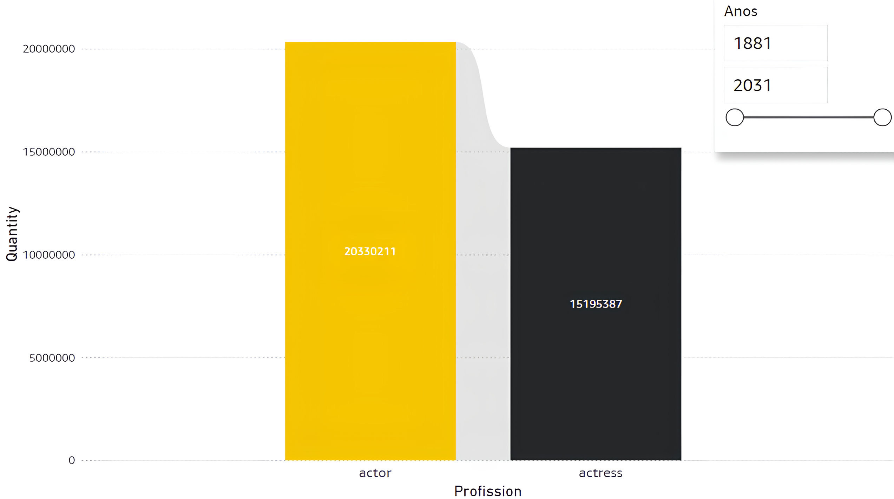

Visão geral
Objetivo e ferramentas
Como meu primeiro projeto em Data Analysis, o objetivo primário foi colocar em prática minhas habilidades de extrair e transformar dados através de uma análise exploratória nos datasets do IMDb, que são extensos em conteúdo.
Nesse projeto utilizei a linguagem Python e sua biblioteca Pandas, o sistema relacional MySQL e a ferramenta de visualização Power BI.
- Python
- Pandas
- MySQL
- Power BI
- IMDb
- TMDB
Parte 1
Entendendo e coletando os dados
1. Introdução
Júlia é uma entusiasta no setor de cinema e decide se aventurar investindo em uma startup, a MoviesNow. Porém, percebe que a empresa não está bem organizada e, mesmo preparando seu primeiro projeto, não conhece os padrões de mercado desse setor do entretenimento.
Em busca de ajudar a MoviesNow a aprimorar sua estratégia e direcionamento, Júlia decide usar suas habilidades em Data Analysis, visando não apenas coletar dados, mas transformá-los em informações valiosas e acionáveis. Para isso, parte em busca de um dataset.
2. Conjunto de dados
Júlia busca um dataset robusto e informativo, o que a leva ao IMDb, que possui uma fonte extensa e atualizada com detalhes sobre o nascimento de artistas, obras cinematográficas, avaliações, anos de produção e muitos outros dados.
3. Dicionário de dados
title.akas.tsv.gz
- titleId
- Identificador único do título.
- ordering
- Número único da linha para um titleId.
- title
- Título localizado.
- region
- Região desta versão do título.
- language
- Idioma do título.
- types
- Atributos enumerados para o título alternativo.
- isOriginalTitle
- Indica se é o título original.
title.basics.tsv.gz
- tconst
- Identificador único do título.
- titleType
- Formato do título: filme, série, curta e outros.
- primaryTitle
- Título mais popular.
- originalTitle
- Título no idioma original.
- isAdult
- Indica conteúdo adulto.
- startYear
- Ano de lançamento ou início da série.
- endYear
- Ano de término da série.
- runtimeMinutes
- Duração principal em minutos.
- genres
- Até três gêneros associados ao título.
Demais tabelas utilizadas
- title.principals
- Pessoas, categorias de trabalho, funções e personagens creditados.
- title.ratings
- Avaliação média ponderada e número de votos do título.
- name.basics
- Nomes, nascimento, falecimento, profissões e títulos conhecidos.
Parte 1 · Continuação
Transformando e carregando os dados
O primeiro desafio foi converter arquivos no formato TSV do IMDb para CSV, compatível com o MySQL Workbench 8.0. Por causa do tamanho dos arquivos, conversores online não conseguiam realizar a transformação.
Para contornar isso, Júlia utilizou um script em Python. O código identificava os padrões do TSV, substituía tabulações por vírgulas e realizava as demais formatações necessárias para que os dados fossem interpretados corretamente pelo MySQL.
Após a conversão, a tentativa inicial de usar o Table Import Wizard
apresentou problemas de performance. A solução foi utilizar
LOAD DATA LOCAL INFILE, concluindo a carga da base.
Os dados abrangiam o período de 1894 a 2024 e mais de 240 países. A extensão histórica e geográfica foi uma das características mais interessantes do projeto.
Parte 2
Analisando com MySQL e Power BI
Nesta seção estão as queries mais interessantes desenvolvidas ao longo do projeto, acompanhadas de comentários, contexto e visualizações para melhorar o storytelling.
1. Os 25 melhores filmes no IMDb
A query traz os 25 filmes com melhor avaliação. Ela é duplamente
filtrada por averageRating para manter a relevância,
mas ordenada principalmente por numVotes na subquery.
2. Gêneros promissores para 2024+
A consulta conta os gêneros esperados para filmes, séries e curtas com lançamento de 2024 em diante, ajudando a compreender tendências futuras do mercado.
3. Faixa etária entre atores
Como o dataset não fornecia a idade diretamente, utilizei
COALESCE para calculá-la, considerando que vários
valores de deathYear eram nulos. Essa foi também a
primeira query do projeto.
4. Curtas e longas ao longo dos anos
A extensão do dataset permitiu comparar curtas e longas-metragens desde 1874 até o presente, mostrando como produções menores se tornaram mais comuns com a democratização dos equipamentos e da distribuição.
5. Tendências temporais: duração e crítica
A consulta analisa como o tempo afetou a duração dos filmes e suas avaliações. Em 2008, a duração média de um “filme nota 10” era de 78 minutos; em 2024, era de 102 minutos e 24 segundos.
6. Regiões por contagem de adaptações
Uma das queries mais simples, contando títulos adaptados para diferentes regiões. O Brasil aparece no top 13, com 126.385 conteúdos adaptados.

7. Homens e mulheres no entretenimento
A query traz à tona a discussão sobre gênero no mercado de trabalho. Uma pena o dataset não incluir salários, que permitiriam uma análise ainda mais interessante.

8. Profissionais mais prolíficos
A consulta traz as pessoas mais creditadas no IMDb, isto é, os profissionais que aparecem com mais frequência nos créditos. Foi também uma das queries mais pesadas em termos de desempenho.
9. Seriados mais antigos ainda em andamento
A query lista as séries mais antigas que continuam recebendo atualizações. Surpreendentemente, Os Simpsons aparecem apenas na nona posição.
10. Lucros da indústria por ano
A partir daqui, uma tabela adicional do TMDB adiciona custos e lucros. A consulta acompanha o lucro geral entre 1913 e 2024 e evidencia o impacto da pandemia de COVID-19 entre 2019 e 2021.
11. Ganhos brutos por empresa
A query apresenta, por ano, as somas cumulativas de ganhos e custos
de empresas. SUBSTRING_INDEX seleciona apenas a empresa
principal entre as várias companhias creditadas em uma produção.
.png)
12. Lucros por região do mundo
A função SUM com a cláusula
OVER calcula a soma acumulada dos lucros para cada
país, permitindo observar a concentração geográfica da indústria.
13. Lucro por gênero de filmes
A consulta relaciona lucros e avaliações. Eles não andam sempre de mãos dadas: documentários, por exemplo, possuem algumas das melhores avaliações e também alguns dos piores lucros.
Parte 3
Relatório final e interatividade
Na etapa final, reuni por escrito os principais pontos observados e construí dashboards no Power BI para comunicar os resultados de maneira acessível, simplificada e envolvente.
Perfil dos membros da indústria
- Grande parte dos atores e atrizes vivos é adulta; atores mirins representam uma parcela muito pequena.
- A discrepância entre homens e mulheres ainda é grande, embora menor que antigamente, quando chegou a aproximadamente 2 para 1.
- Entre os nomes mais creditados aparecem Reg Watson, Ernesto Alonso e a família Kapoor, com Ekta e Shobha entre as principais posições.
Economia da indústria
- A indústria apresentava crescimento constante nos lucros, mas sofreu queda brusca com a pandemia e ainda não havia se recuperado no período analisado.
- Os Estados Unidos superam os lucros de diversas outras regiões.
- Ação, Comédia e Aventura são muito lucrativos, mas possuem avaliações menores; Animação e Drama aparecem como alternativas de equilíbrio.
Previsões para 2024 em diante
- Drama, Comédia, Documentário e Ação eram os gêneros mais esperados.
- Talk Shows, Game Shows e noticiários apareciam entre os menos frequentes.
- Produções menores se tornaram mais comuns após os anos 2000, com internet, câmeras e acessórios mais acessíveis.
- A duração mais comum dos filmes aumentou, mas a duração associada às melhores avaliações não seguiu exatamente o mesmo padrão.
Miscelâneas
- Europa, Índia e Japão aparecem como grandes focos de adaptações; o Brasil ocupa a 13ª posição.
- Entre os filmes mais bem avaliados estão Um Sonho de Liberdade, O Poderoso Chefão e Batman: O Cavaleiro das Trevas.
A situação simulada com Júlia e a MoviesNow foi útil para gerar contexto de negócio ao trabalho. Muito aprendizado foi colocado neste projeto, e mais ainda foi obtido com ele.
Texto migrado e reorganizado a partir do estudo original no Wix. Consultas e materiais no GitHub.